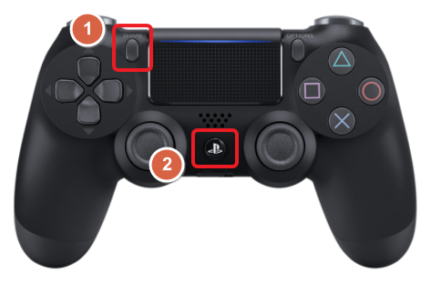

PS4 컨터롤러 연결
PlayStation 4(PS4) 컨트롤러를 Jetson Orin Nano에 연결하여 입력 장치로 사용하는 방법은 다음과 같습니다. 이 작업은 Bluetooth 또는 USB 케이블을 사용하여 연결할 수 있으며, Python과 관련 라이브러리를 사용하여 입력 데이터를 처리할 수 있습니다.
그림.1 ps4
1. Bluetooth 연결
-
Bluetooth 활성화
Jetson Orin Nano에 Bluetooth가 없다면 USB 블루투스 동글을 연결해야 합니다. 다음 명령어로 Bluetooth 서비스를 활성화합니다:sudo systemctl start bluetooth sudo systemctl enable bluetooth -
PS4 컨트롤러 페어링
- PS4 컨트롤러의
PS버튼과Share버튼을 동시에 누르고, LED가 깜박일 때까지 유지합니다. 그림.2 연결
-
Jetson Orin Nano에서 Bluetooth 장치를 검색하고 연결합니다:
bluetoothctl -
Bluetooth CLI에서:
연결되면 LED가 켜진 상태로 유지됩니다.scan on pair [컨트롤러 MAC 주소] connect [컨트롤러 MAC 주소] trust [컨트롤러 MAC 주소]
- PS4 컨트롤러의
2. Python으로 입력 데이터 처리
Python과 관련 라이브러리를 사용하여 PS4 컨트롤러 입력을 처리할 수 있습니다.
필수 라이브러리 설치
inputs라이브러리 설치:pip3 install inputs
Python 코드 예제
다음 코드는 PS4 컨트롤러의 버튼 및 조이스틱 입력을 읽는 기본 예제입니다:
from inputs import get_gamepad
def main():
print("Listening for PS4 controller inputs...")
while True:
events = get_gamepad()
for event in events:
print(f"Event: {event.ev_type}, Code: {event.code}, State: {event.state}")
if __name__ == "__main__":
main()
- 출력 예시:
Event: Key, Code: BTN_SOUTH, State: 1→ X 버튼이 눌림.Event: Absolute, Code: ABS_X, State: 128→ 왼쪽 조이스틱 움직임.
3. PS4 컨트롤러 데이터 해석
-
버튼 매핑:
BTN_SOUTH: X 버튼BTN_EAST: 원형 버튼BTN_NORTH: 삼각형 버튼BTN_WEST: 사각형 버튼
-
조이스틱:
ABS_X,ABS_Y: 왼쪽 조이스틱 (수평 및 수직 축)ABS_RX,ABS_RY: 오른쪽 조이스틱
-
트리거:
ABS_Z: L2 트리거ABS_RZ: R2 트리거
4. Jetson Orin Nano에서 활용
PS4 컨트롤러 데이터를 Jetson Orin Nano의 애플리케이션(예: 로봇 제어, 게임, 시뮬레이션)에 통합합니다.
예제: 조이스틱으로 서보 모터 제어
-
필수 라이브러리 설치:
pip3 install adafruit-circuitpython-servokit -
Python 코드:
from inputs import get_gamepad from adafruit_servokit import ServoKit kit = ServoKit(channels=16) def control_servo(x_axis): # Convert joystick value (-32768 to 32767) to servo angle (0 to 180) angle = (x_axis + 32768) * 180 // 65536 kit.servo[0].angle = angle def main(): print("Listening for PS4 controller inputs...") while True: events = get_gamepad() for event in events: if event.code == "ABS_X": # Left joystick horizontal control_servo(event.state) if __name__ == "__main__": main()
5. 연결 종료
ps 버턴을 10초가 계속 누르면, 전면부에 있는 LED가 꺼지며, 연결이 종료된다.
그림.2 종료
6. 문제 해결
-
컨트롤러가 인식되지 않을 때:
dmesg명령으로 USB 또는 Bluetooth 장치 로그 확인.- 블루투스 동글 또는 USB 케이블 상태 확인.
-
입력 지연 발생:
- Jetson Orin Nano의 프로세스 우선순위를 조정하거나 실시간 입력 처리를 최적화.
이 가이드를 따라 PS4 컨트롤러를 Jetson Orin Nano와 성공적으로 연결하고 입력 데이터를 처리할 수 있습니다. 추가 도움이 필요하면 언제든지 문의하세요!